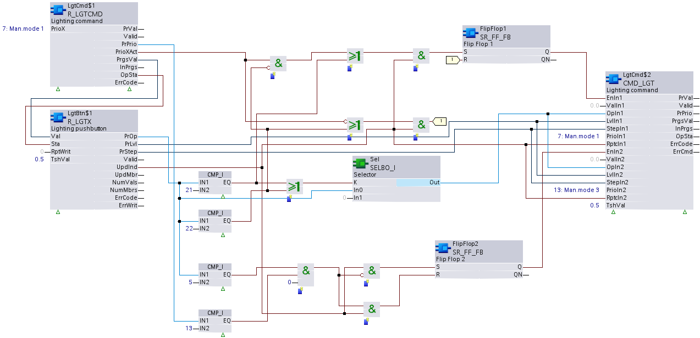

R_LGTX: Read multiple lighting
R_LGTX reads a structured Present value property from one of multiple (up to 16) aggregated member lighting input objects (member objects are aggregated by means of a Collection view node object). R_LGTX is designed to detect the first input that has been updated since last read. R_LGTX provides the signals Valid, UpdInd, ErrCode and ErrWrit to the Control program for processing.
R_LGTX will also, optionally, provide the current lighting state, value, and condition of manual operation lock from the control program to be written back to each aggregated lighting input object. R_LGTX will do this if the associated input pins have been wired to receive values during runtime. Otherwise (input pins not wired) R_LGTX will write to the aggregated BA-Objects after a download / restart only those values (set by engineer) that are not default.
Control-command commanding
Control-command commanding is the typical runtime condition in which lighting input objects receive push button commands represented by the structured Present value property with elements [PrOp], [PrLvl], and [PrStep]. R_LGTX provides the most recent input request to a command lighting XFB. The command lighting XFB writes the request with an accompanying priority level to a lighting output object, and also reads the actual lighting state and value (which could be different than what was commanded) and present priority from the lighting output object. The command lighting XFB provides these values back to R_LGTX, to be (optionally) written to each aggregated lighting input object’s properties (Lighting state, Lighting value, and Room operator unit, manual operation locked). Since typically there are multiple inputs affecting the same lights, each input object needs to be aware of and reflect the actual state and value of the lights based on the most recent input request.
Manual operation lock
The command lighting XFB can read the current priority at the lighting output object, and if it is higher than the priority used for manual operation, then the lighting input devices can be notified and manual operation prevented.
Hardware interrupt
This XFB supports hardware interrupts (OB trigger) for immediate response to specific events such as manual switching of lights. If the XFB is applied in a chart assigned to OB40 or OB41, OB triggering occurs automatically on interrupt signals from I/O modules.
Compatible data points:
- Lighting input [LgtIn]
Refer to data point objects for a detailed description of the BACnet data points.
Required properties:
- Present value
- State flag
- Update count
- Lighting value
- Lighting state
Pin description (inputs)
BaObjRef | |
|---|---|
BA-Object reference Structure [BaObjRef] defines a bound connection between XFB and BACnet object. The binding occurs automatically. Manual configuration attempts are not necessary and can result in system errors. | |
DeviceId | Device identifier Double word (default value: 16#3FFFFF) [DeviceId] comprises object type and object instance in a single identifier. It is used to identify device object: local or remote. Local device object could also be identified by value 16#3FFFFF. |
ObjectId | Object identifier Double word (default value: 16#3FFFFF) [ObjectId] comprises object type and object instance in a single identifier. It is used to identify object within a device. |
ItemId | Item identifier Integer (default value: -1) [ItemId] represents an item index in the functional view node object, which references the BACnet object. [ObjectId] and [ItemId] together define an indirect access reference to the BACnet object. Value -1 indicates that direct binding is used. |
Val |
|---|
Value Real (default value: 0.0) The current value of the lighting actuator, as read by the control program from the lighting output object. [Val] represents the lighting value to write to all aggregated member lighting input objects, to the Lighting value property. Entries to, and use of [Val] are optional. [Val] will be written for any of the following:
Note |
Sta |
|---|
State Boolean (default value: False) The current state of the lighting actuator, as read by the control program from the lighting output object. [Sta] represents the lighting state (On/Off) to write to all aggregated member lighting input objects, to the lighting state property. Entries to, and use of [Sta] are optional. [Sta] will be written for any of the following:
Note |
TshVal |
|---|
Threshold value Real (default value: 1.0) A parameterized value used to control the XFB write attempts. An attempt is only allowed if the value difference is equal or greater than [TshVal]. Exception: the change equals a limit value such as 0.0 or 100.0 ([TshVal] is ignored). Note |
ManOpLck |
|---|
Manual operation locked Boolean (default value: False) [ManOpLck] provides information on whether manual operation should be allowed at the lighting input devices (push button or operation panel). The lighting command XFB can read the current priority at the lighting output object, and if it is higher than the priority used for manual operation, then the lighting input devices can be notified and manual operation prevented. Entries to, and use of [ManOpLck] are optional. [ManOpLck] will be written for any of the following:
Note |
RptWrit | |
|---|---|
Repeat write Boolean (default value: False) [RptWrit] forces a write of inputs [Val], [Sta], and [ManOpLck] to the lighting input objects. The write operation is repeated with each program cycle for as long as [RptWrit] is True. [RptWrit] will typically be calculated and set by the control program. Note | |
1 (True) | [Val] and [Sta] are written to the lighting input objects with each program cycle for as long as [RptWrit] is True. |
0 (False) | No action. |
Pin description (outputs)
PrOp | |
|---|---|
Present operation Integer (default value: 0) The value of the Operation element of the present value property from the last updated member of the aggregated lighting input objects. [PrOp] will deliver the last valid value if [Valid] = False. | |
0 (Stop) default | Command to stop dimming. |
1 (Start dim-up) | Command to increase the current dimming value continuously up to 100% or until a stop command is received. |
2 (Start dim-down) | Command to decrease the current dimming value continuously down to 0% or until a stop command is received. |
3 (Step-up) | Command to increase the current dimming value in discrete steps (step increments) by adding an amount specified by [PrStep]. |
4 (Step-down) | Command to decrease the current dimming value in discrete steps (step increments) by subtracting an amount specified by [PrStep]. |
5 (Switch-on) | Command to switch the lighting actuator on. |
6 (Switch-off) | Command to switch the lighting actuator off. |
7 (Goto level) | Command to directly set the lighting actuator to the target level specified by [PrLvl]. (For example, target state commanding.) |
20 (No command) | Command indicating no action to be taken on the lighting actuator. |
PrLvl |
|---|
Present level Real (default value: 0.0) The value of the level element of the present value property from the last updated member of the aggregated lighting input objects. [PrLvl] will deliver the last valid value if [Valid] = False. |
PrStep |
|---|
Present step Real (default value: 0.0) The value of the step element of the present value property from the last updated member of the aggregated lighting input objects. [PrStep] will deliver the last valid value if [Valid] = False. |
Valid | |
|---|---|
Valid Boolean (default value: False) An indication of whether output pins [PrOp], [PrLvl] or [PrStep] are reliable. | |
1 (True) | Present value output pins are reliable.
AND
|
0 (False) | Present value output pins are not reliable.
OR
|
UpdInd |
|---|
Update indication Boolean (default value: False) An indication of whether the Present value (structured lighting input command) property for one of the aggregated member objects has been newly updated. When an update occurs, [UpdInd] toggles from 0 to 1 (True) and returns to 0 (False) on the next cycle (immediate). It is not possible to detect the toggle without an additional function block connected to [UpdInd] (for example, a counter function block). [UpdInd] will only be set to True if [Valid] is True. [UpdInd] uses the update count property. This makes it possible to recognize a value as having been updated if the new value is the same as the previous value. |
UpdMbr |
|---|
Update member Integer (default value: 0) The last updated lighting input object. [UpdMbr] will show the index number of the collection view node object ItemId for the last updated member object. |
NumVals |
|---|
Number of valid values Integer (default value: 0) The number of valid lighting input objects in the collection view node object. |
NumMbrs |
|---|
Number of aggregated members Integer (default value: 0) The total number of member objects in the collection view node object. |
ErrCode | |
|---|---|
Error code indication Integer (default value: 20) The status of the last performance of the XFB read operation. | |
= 0 | No error. |
> 0 | Error, see XFB error codes. |
ErrWrit | |
|---|---|
Error while writing Integer (default value: 20) The status of the last performance of the XFB write operation to the result object. | |
= 0 | No error. |
> 0 | Error, see XFB error codes. |
Use case examples
NOTICE

Note
Graphics reflect examples of XFB implementations; See ABT for current examples of CFC.
Push button control-command: R_LGTX receives push button commands and provides them to CMD_LGT.
